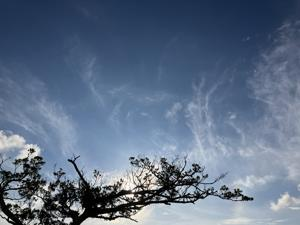
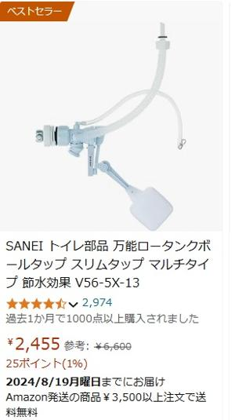

うるがいの話 ある日
最新: ボールタップを再設置【うるがいの話 ある日】とは 一日だけのプログです
『うるがいの話』の最新一日だけのプログで、通信料が少なく経済的だ。カニの画像をクリックすると全ての日付が載る『うるがいの話』サイトを表示します
|
|
【うるがいの話】 うるがい(ｳﾙｶﾞｲ urugai)とは、『もずくがに』の名前でとても大きくなります。 |
|---|---|
|
|
【カミマヤーの話】 猫のことを方言でマヤーといいます。カミマヤー（kamimayaa）とは、神の猫のことです。 |
|
【たながぁの音楽】 たながぁ（ﾀﾅｶﾞｰ tanagaa）とは手長えびのことで、何種類かあり大きいのは車 エビぐらいになります。 |

|
【ぶながぁの話】 ぶながぁ(ﾌﾞﾅｶﾞｰ bunagaa)とは、赤い髪の毛、赤い身体、そして身長は１ｍ２０ｃｍ ぐらい、川の蟹を食べているの目撃された。場所は沖縄県国頭郡大宜味村のと ある村僕の隣近所に住んでいる爺さんから、聞いた話です。 |
|
|
【ギーマの話】 ギーマ(giima)とは、山原の里山に咲くスズランに似た、 花を付けます。実は食べられます、 気が付くと口の周りが紫になっています。 |
2024年08月16日 (金）ボールタップを再設置
17:26

先週から、トイレのタンクからチョロチョロを水が流れる音！、給水されて
くる水を止水する装置（ボールタップ）がいかれてしまった。昨日、メイク
マンで５，９８０円（ＳＡＮＥＩ－Ｖ５６－５Ｘ－１３）で購入した新品を
入れ替えた。治ったぜ！！と喜んだもつかの間、また、水が洩れたり、変な
ヤマモリがなくようなキュルキュルという音がする。あ、不良品かもと落ち
込む。朝から、説明書を真剣に読み込み、ボールタップを再設置した。ジャ
ジャジャジャーン、上手くいった。

きのうは、なぜか一人で設置できずヨメも器具をつかませたり応援してもら
った。前は一人で苦労せず出来たのに？と思ったが、今日は一人でサラリと
済んだ。昨日の不手際は？？？？？？、歳のせいか。アマゾンで、同じ製品
をかなり安い値段で売っていた。次は、アマゾンで買う事にする。
今日は、ウンケーである。ヨメ方の仏壇も、マンションでお義母さんも一緒
にお迎えをする。お義母さんの９０才になる妹も、タクシーで来てくれた。
東町への帰りは、私が送っていった。車の中で来年は、マンションでは出来
ないかもと話した。高齢なる皆様、かなりやばいのである。

『ＭＥＭＯＲＹ メモリー ２０２２年』という映画をみていると、『アド
リア海沿岸と沖縄は”ブルーゾーン”と呼ばれている』という字幕がでた。
フムフム、沖縄の現状は違うのだけどと思った。
「ブルーゾーン」とは、１００歳人が多く暮らす世界の５カ所の長寿地域の
ことです。
我が家では、先ほど仏壇に向かってお迎えをする。天気予報をでは、明日は
雨、ウークイのあさっては大雨になっている。チャースガテ。
１７時１９分 ビットコインの総資産 ￥２５、２６９（↑４１９）